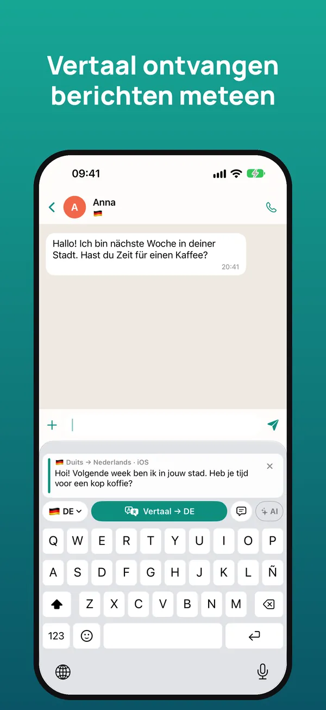
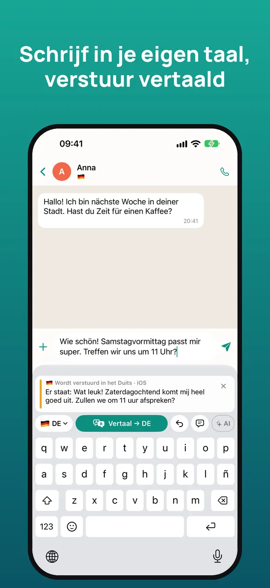
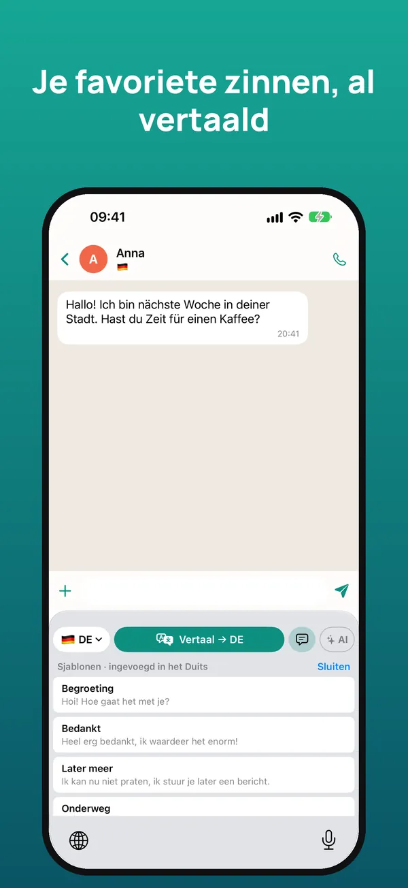
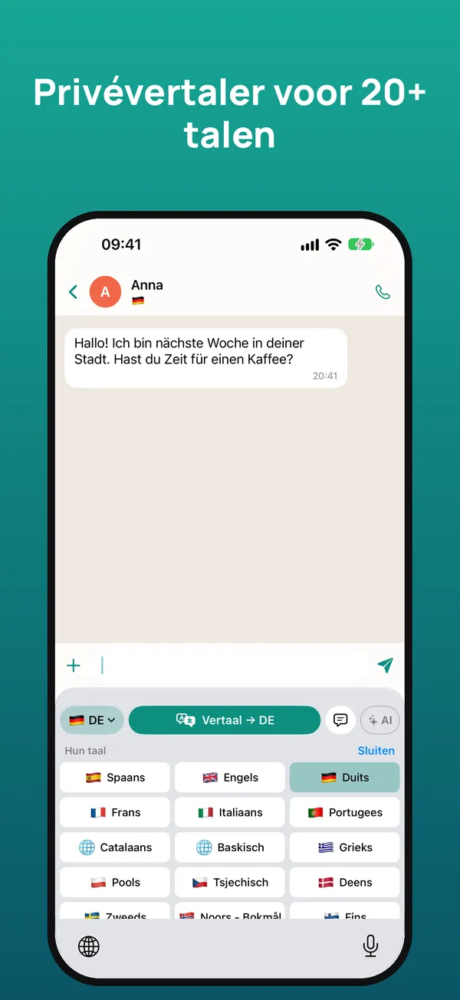

Het vertaaltoetsenbord om in elke taal te chatten
Lees wat er naar je geschreven wordt in je eigen taal en antwoord in de hunne, gewoon in WhatsApp, Telegram, Instagram of elke andere app. De vertaling gebeurt op je iPhone.
7 dagen gratis proberen · iPhone met iOS 26 of nieuwer

Zo werkt het
Houd het ontvangen bericht ingedrukt en tik op ‘Kopieer’. Het toetsenbord vertaalt het meteen naar jouw taal.
Typ je antwoord zoals altijd en tik op ‘Vertaal’: het wordt vervangen door de vertaling, klaar om te versturen.
Eronder zie je wat je bericht in jouw taal zegt, zodat je het met een gerust hart verstuurt.



Alles om met iedereen te praten
Begrijp de berichten die je ontvangt en antwoord in de taal van de ander.
WhatsApp, Telegram, Instagram, Messenger, e-mail… Het werkt overal waar je typt.
Behoudt de toon en de juiste aanspreekvorm (je of u) en gebruikt het gesprek als context.
Vertaling van Apple op je iPhone: offline, geen advertenties, geen tracking en geen account.
Koppel je eigen sleutel van Claude, Gemini of ChatGPT voor nog natuurlijkere vertalingen.
Sjablonen die al vertaald worden ingevoegd en een woordenlijst voor namen en uitdrukkingen, met iCloud.
Meer dan 20 talen
Nederlands, Engels, Spaans, Duits, Frans, Italiaans, Portugees, Catalaans, Baskisch, Grieks, Pools, Tsjechisch, Deens, Zweeds, Noors, Fins, Roemeens, Hongaars, Oekraïens, Russisch, Turks, Arabisch, Chinees en Japans.
Prijs
Typen met het toetsenbord is altijd gratis. Op elk moment op te zeggen in de iPhone-instellingen.
Veelgestelde vragen
Werkt het met WhatsApp?
Ja. Het werkt in elke app waarin je typt: WhatsApp, Telegram, Instagram, Messenger, Gmail, LinkedIn en meer.
Is het gratis?
Je krijgt 7 dagen gratis. Daarna € 2,99 per maand of € 19,99 per jaar, of eenmalig € 39,99. Typen is altijd gratis.
Waarom vraagt het om ‘Volledige toegang’?
iOS vereist dit zodat het toetsenbord het gekopieerde bericht kan lezen, AI kan gebruiken als je die aanzet en instellingen met de app kan delen. Het bewaart of verstuurt niet wat je typt.
Werkt het offline?
Ja. Met de vertaling van Apple wordt na het downloaden van de talen op je iPhone vertaald, zonder verbinding.
Welke talen vertaalt het?
Meer dan 20, waaronder Engels, Spaans, Duits, Frans, Italiaans, Portugees, Chinees en Japans.
Is er een Android-versie?
Voorlopig is het alleen beschikbaar voor iPhone met iOS 26 of nieuwer.
In een minuut aan de slag
- Installeer de app en open de starthandleiding.
- Zet in iOS-instellingen → Toetsenborden het toetsenbord en ‘Sta volledige toegang toe’ aan.
- Houd in elke chat 🌐 ingedrukt en kies het toetsenbord.
- Kopieer het ontvangen bericht om het vertaald te lezen; schrijf in je eigen taal en tik op Vertaal.
Hulp nodig? Mail ons op soporte@sherpastime.com.